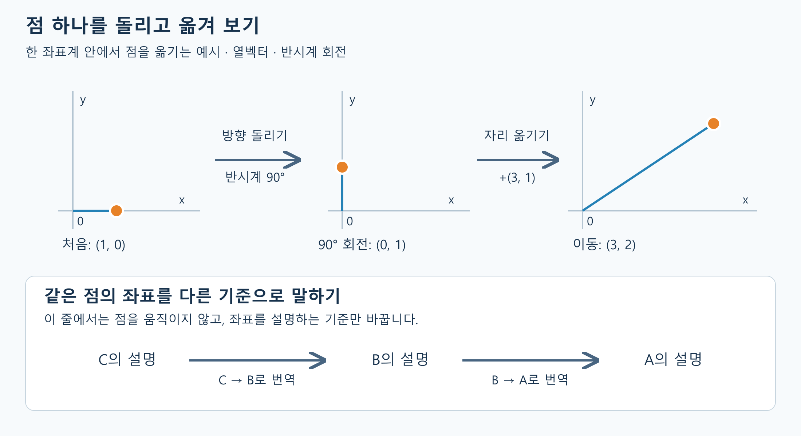

03 / HOMOGENEOUS TRANSFORM
돌리기와 옮기기를 한 번에
점을 돌리고, 옆으로 옮기는 두 계산을 한 장의 계산표에 담은 것이 동차 변환 행렬입니다.

(1, 0)90° 회전 →(0, 1)오른쪽 3, 위로 1 →(3, 2)
“회전한 좌표 + 이동량”을 계산하면 됩니다. 이를 한 번의 행렬 곱으로 묶으려고 좌표 끝에 1을 붙입니다.
동차 좌표와 행렬 보기
p′ = Rp + t
0−13101001 × (1, 0, 1)T = (3, 2, 1)T
0−13101001 × (1, 0, 1)T = (3, 2, 1)T
2차원은 (x,y,1)과 3×3 행렬, 3차원은 (x,y,z,1)과 4×4 행렬을 씁니다. 열벡터에 곱할 때 오른쪽부터 적용하므로 이동 @ 회전 @ 점은 먼저 회전하고 이동합니다.
순서를 바꾸면 결과도 달라집니다. 먼저 이동하고 원점 주위로 회전하면 같은 점에 도착하지 않을 수 있습니다.
출처와 참고 자료
교안 PDF p.7의 4×4 표현을 2차원 예로 풀었습니다. 이 행렬 자체는 모터 동작 명령이 아니라 좌표 계산 도구입니다.